Sélections
Éliminatoires CAN 2027BientôtLigue des nations UEFABientôtMatchs amicauxBientôtLigue des nations CONCACAFBientôt
Coupes d'Europe
Ligue des Champions9 matchs à venirLigue Europa17 matchs à venir
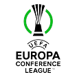
Ligue Conférence18 matchs à venirGrands championnats
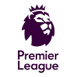
Premier League1 match à venirLiga1 match à venirSerie A1 match à venirBundesliga1 match à venir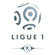
Ligue 11 match à venirDeuxièmes divisions
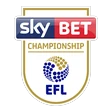
ChampionshipBientôtLiga 21 match à venirSerie BBientôt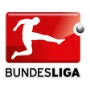
2. BundesligaBientôt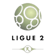
Ligue 2Bientôt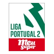
Liga Portugal 2BientôtEerste DivisieBientôtAutres championnats d'Europe
EredivisieBientôtLiga PortugalBientôtSüper LigBientôtPro LeagueBientôtScottish PremiershipBientôt
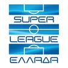
Super League GrèceBientôtChampionnat d'UkraineBientôt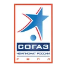
Championnat de RussieBientôtEkstraklasaBientôtBundesliga autrichienneBientôtSuper League SuisseBientôt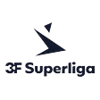
Superliga DanemarkBientôtAllsvenskanBientôt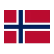
EliteserienBientôtAfrique
Ligue des champions CAFBientôtCoupe de la Confédération CAFBientôtChampionnat d'ÉgypteBientôtChampionnat d'Afrique du SudBientôt
Amériques et Asie
MLSBientôtBrasileirãoBientôtLiga argentineBientôtLiga MXBientôtJ1 LeagueBientôtK League 1BientôtSaudi Pro LeagueBientôtA-LeagueBientôt
Autres sports
Éliminatoires CAN 2027
Derniers résultats
Ligue des nations UEFA
Derniers résultats
Matchs amicaux
Pas de match pour l'instant. Reviens bientôt : j'ajoute les matchs dès qu'ils sont programmés.
Ligue des nations CONCACAF
Pas de match pour l'instant. Reviens bientôt : j'ajoute les matchs dès qu'ils sont programmés.
Ligue des Champions
À venir
Sabah FKvsBarcelone
Barcelone gagne et plus de 1,5 but
À venirSlavia PraguevsVillarreal
Plus de 1,5 but dans le match
À venirAtlético MadridvsViking FK
Atlético Madrid marque au moins 2 buts
À venirClub BruggevsLiverpool
Plus de 2,5 buts dans le match
À venirIntervsVfB Stuttgart
Inter marque au moins 2 buts
À venirLillevsBayern Munich
Bayern Munich marque au moins 2 buts
À venirPSGvsAS Roma
Le PSG gagne et plus de 2,5 buts
À venirShakhtar DonetskvsFenerbahce
Moins de 3,5 buts dans le match
À venirSporting CPvsManchester United
Victoire de Sporting CP
À venirDerniers résultats
ArsenalvsBorussia Dortmund
Arsenal ou match nul
✅ GagnéComovsAEK Athens
Victoire de Como
✅ GagnéFeyenoord RotterdamvsPorto
Les deux équipes marquent
❌ PerduRB LeipzigvsLens
Les deux équipes marquent
✅ GagnéSlovan BratislavavsReal Betis
Victoire de Real Betis
✅ GagnéBodo/GlimtvsLASK Linz
Les deux équipes marquent
❌ PerduLigue Europa
À venir
BesiktasvsHapoel Be'er
Plus de 1,5 but dans le match
À venirCelta VigovsBournemouth
Bournemouth ou match nul
À venirDinamo ZagrebvsBayer Leverkusen
Plus de 1,5 but dans le match
À venirOlympiacosvsMilan
Victoire de Olympiacos
À venirRB SalzburgvsArarat-Armenia
Victoire de RB Salzburg
À venirUnion St.-GilloisevsLech Poznan
Plus de 1,5 but dans le match
À venirViktoria PlzenvsBenfica
Moins de 3,5 buts dans le match
À venirCrystal PalacevsReal Sociedad
Crystal Palace ou match nul
À venirFerencvarosvsNK Celje
Ferencvaros ou match nul
À venirJuventusvsOmonia Nicosia
Juventus ou match nul
À venirLyonvsLillestrom
Plus de 1,5 but dans le match
À venirNEC NijmegenvsStade Rennais
Plus de 1,5 but dans le match
À venirOFI CretevsAnderlecht
Moins de 3,5 buts dans le match
À venirSparta PraguevsAZ Alkmaar
AZ Alkmaar ou match nul
À venirSunderlandvsJagiellonia Bialystok
Victoire de Sunderland
À venirTorreensevsCeltic
Torreense ou match nul
À venirTSG HoffenheimvsSK Sturm Graz
Plus de 1,5 but dans le match
À venirDerniers résultats
Ligue Conférence
À venir
Kairat AlmatyvsMjällby AIF
Moins de 3,5 buts dans le match
À venirAjax AmsterdamvsThun
Plus de 1,5 but dans le match
À venirBrighton & Hove AlbionvsCSU Craiova
CSU Craiova ou match nul
À venirEgnatiavsLincoln Red Imps
Plus de 1,5 but dans le match
À venirHeart of MidlothianvsAS Monaco
Moins de 3,5 buts dans le match
À venirIberia 1999vsGetafe
Iberia 1999 ou match nul
À venirJablonecvsLugano
Plus de 1,5 but dans le match
À venirKauno ZalgirisvsRiga FC
Moins de 3,5 buts dans le match
À venirPafosvsMidtjylland
Pafos ou match nul
À venirSK BrannvsAGF
Victoire de SK Brann
À venirBorac Banja LukavsAtalanta
Plus de 1,5 but dans le match
À venirBragavsKuPS Kuopio
Victoire de Braga
À venirCSKA SofiavsTrabzonspor
Moins de 3,5 buts dans le match
À venirNordsjællandvsPanathinaikos
Panathinaikos ou match nul
À venirHajduk SplitvsSint-Truidense
Plus de 1,5 but dans le match
À venirInter D'EscaldesvsF.C. København
Moins de 3,5 buts dans le match
À venirKAA GentvsRed Star Belgrade
Red Star Belgrade ou match nul
À venirFreiburgvsTwente
Plus de 1,5 but dans le match
À venirDerniers résultats
Premier League
À venir
Derniers résultats
BrentfordvsEverton
Les deux équipes marquent
❌ PerduLiverpoolvsManchester United
Les deux équipes marquent
❌ PerduHull CityvsBrighton & Hove Albion
Brighton & Hove Albion ou match nul
❌ PerduNewcastlevsArsenal
Les deux équipes marquent
✅ GagnéBournemouthvsNottingham Forest
Victoire de Bournemouth
✅ GagnéAston VillavsSunderland
Aston Villa ou match nul
✅ GagnéLiga
À venir
Derniers résultats
LevantevsElche
Levante ou match nul
✅ GagnéGetafevsAtlético Madrid
Victoire de l'Atlético de Madrid
✅ GagnéOsasunavsMálaga
Osasuna ou match nul
✅ GagnéRacing SantandervsReal Sociedad
Real Sociedad ou match nul
❌ PerduBarcelonevsVillarreal
Victoire de Barcelone
✅ GagnéReal MadridvsCelta Vigo
Victoire du Real Madrid
✅ GagnéSerie A
À venir
Derniers résultats
Bundesliga
À venir
Derniers résultats
Werder BremenvsHamburg SV
Werder Bremen ou match nul
✅ GagnéAugsburgvsMainz
Les deux équipes marquent
✅ GagnéSchalke 04vsVfB Stuttgart
VfB Stuttgart ou match nul
✅ GagnéMönchengladbachvsBorussia Dortmund
Victoire de Dortmund
✅ GagnéUnion BerlinvsRB Leipzig
Victoire de RB Leipzig
✅ GagnéBayer LeverkusenvsPaderborn 07
Victoire de Bayer Leverkusen
✅ GagnéLigue 1
À venir
Derniers résultats
Championship
Pas de match pour l'instant. Reviens bientôt : j'ajoute les matchs dès qu'ils sont programmés.
Liga 2
À venir
Derniers résultats
CeutavsAlmería
Victoire de Almería
✅ GagnéBurgosvsAlbacete
Victoire de Burgos
✅ GagnéGironavsEibar
Les deux équipes marquent
✅ GagnéCelta FortunavsReal Valladolid
Les deux équipes marquent
✅ GagnéSporting GijónvsLas Palmas
Sporting Gijón ou match nul
❌ PerduCórdobavsReal Oviedo
Les deux équipes marquent
❌ PerduSerie B
Pas de match pour l'instant. Reviens bientôt : j'ajoute les matchs dès qu'ils sont programmés.
2. Bundesliga
Pas de match pour l'instant. Reviens bientôt : j'ajoute les matchs dès qu'ils sont programmés.
Ligue 2
Pas de match pour l'instant. Reviens bientôt : j'ajoute les matchs dès qu'ils sont programmés.
Liga Portugal 2
Pas de match pour l'instant. Reviens bientôt : j'ajoute les matchs dès qu'ils sont programmés.
Eerste Divisie
Pas de match pour l'instant. Reviens bientôt : j'ajoute les matchs dès qu'ils sont programmés.
Eredivisie
Pas de match pour l'instant. Reviens bientôt : j'ajoute les matchs dès qu'ils sont programmés.
Liga Portugal
Pas de match pour l'instant. Reviens bientôt : j'ajoute les matchs dès qu'ils sont programmés.
Süper Lig
Pas de match pour l'instant. Reviens bientôt : j'ajoute les matchs dès qu'ils sont programmés.
Pro League
Pas de match pour l'instant. Reviens bientôt : j'ajoute les matchs dès qu'ils sont programmés.
Scottish Premiership
Pas de match pour l'instant. Reviens bientôt : j'ajoute les matchs dès qu'ils sont programmés.
Super League Grèce
Pas de match pour l'instant. Reviens bientôt : j'ajoute les matchs dès qu'ils sont programmés.
Championnat d'Ukraine
Pas de match pour l'instant. Reviens bientôt : j'ajoute les matchs dès qu'ils sont programmés.
Championnat de Russie
Pas de match pour l'instant. Reviens bientôt : j'ajoute les matchs dès qu'ils sont programmés.
Ekstraklasa
Pas de match pour l'instant. Reviens bientôt : j'ajoute les matchs dès qu'ils sont programmés.
Bundesliga autrichienne
Pas de match pour l'instant. Reviens bientôt : j'ajoute les matchs dès qu'ils sont programmés.
Super League Suisse
Pas de match pour l'instant. Reviens bientôt : j'ajoute les matchs dès qu'ils sont programmés.
Superliga Danemark
Pas de match pour l'instant. Reviens bientôt : j'ajoute les matchs dès qu'ils sont programmés.
Allsvenskan
Pas de match pour l'instant. Reviens bientôt : j'ajoute les matchs dès qu'ils sont programmés.
Eliteserien
Pas de match pour l'instant. Reviens bientôt : j'ajoute les matchs dès qu'ils sont programmés.
Ligue des champions CAF
Pas de match pour l'instant. Reviens bientôt : j'ajoute les matchs dès qu'ils sont programmés.
Coupe de la Confédération CAF
Pas de match pour l'instant. Reviens bientôt : j'ajoute les matchs dès qu'ils sont programmés.
Championnat d'Égypte
Pas de match pour l'instant. Reviens bientôt : j'ajoute les matchs dès qu'ils sont programmés.
Championnat d'Afrique du Sud
Pas de match pour l'instant. Reviens bientôt : j'ajoute les matchs dès qu'ils sont programmés.
MLS
Pas de match pour l'instant. Reviens bientôt : j'ajoute les matchs dès qu'ils sont programmés.
Brasileirão
Pas de match pour l'instant. Reviens bientôt : j'ajoute les matchs dès qu'ils sont programmés.
Liga argentine
Pas de match pour l'instant. Reviens bientôt : j'ajoute les matchs dès qu'ils sont programmés.
Liga MX
Pas de match pour l'instant. Reviens bientôt : j'ajoute les matchs dès qu'ils sont programmés.
J1 League
Pas de match pour l'instant. Reviens bientôt : j'ajoute les matchs dès qu'ils sont programmés.
K League 1
Pas de match pour l'instant. Reviens bientôt : j'ajoute les matchs dès qu'ils sont programmés.
Saudi Pro League
Pas de match pour l'instant. Reviens bientôt : j'ajoute les matchs dès qu'ils sont programmés.
A-League
Pas de match pour l'instant. Reviens bientôt : j'ajoute les matchs dès qu'ils sont programmés.
NBA
Derniers résultats
Los Angeles LakersvsUtah Jazz
Victoire des Lakers
✅ GagnéSacramento KingsvsSan Antonio Spurs
Victoire des Spurs
✅ GagnéHouston RocketsvsLA Clippers
Victoire des Rockets
✅ GagnéChicago BullsvsCleveland Cavaliers
Victoire des Cavaliers
❌ PerduNew Orleans PelicansvsPhoenix Suns
Victoire des Suns
✅ GagnéIndiana PacersvsOklahoma City Thunder
Victoire des Thunder
❌ PerduTennis
Derniers résultats
Les prochains matchs
Sabah FKvsBarcelone
Barcelone gagne et plus de 1,5 but
À venirSlavia PraguevsVillarreal
Plus de 1,5 but dans le match
À venirAtlético MadridvsViking FK
Atlético Madrid marque au moins 2 buts
À venirClub BruggevsLiverpool
Plus de 2,5 buts dans le match
À venirIntervsVfB Stuttgart
Inter marque au moins 2 buts
À venirLillevsBayern Munich
Bayern Munich marque au moins 2 buts
À venirPSGvsAS Roma
Le PSG gagne et plus de 2,5 buts
À venirShakhtar DonetskvsFenerbahce
Moins de 3,5 buts dans le match
À venirSporting CPvsManchester United
Victoire de Sporting CP
À venirKairat AlmatyvsMjällby AIF
Moins de 3,5 buts dans le match
À venirBesiktasvsHapoel Be'er
Plus de 1,5 but dans le match
À venirCelta VigovsBournemouth
Bournemouth ou match nul
À venir